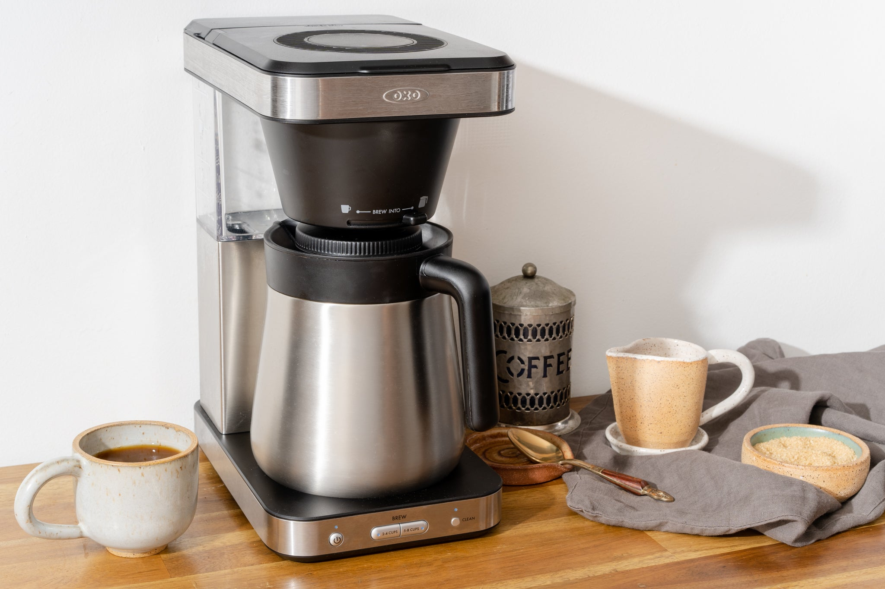

Coffee!
Home

About my coffee!
I've been a semi-regular coffee drinker since I first
tried it back in middle school. Not obsessive, since
I still have a somewhat irrational fear of the effects
of caffeine (don't ask... I still dont understand why
either). After working in coffee shops for about a year
and a half now, my favorite coffee drink is still just a
simple cup of drip with a small bit of cream or milk.
Here's the routine I use to make it in the morning!
What I use:
- Mr. Coffee 5-cup drip coffee machine
- Small coffee filters
- Cuisinart small coffee grinder
- Starbucks Odyssey whole coffee beans
- 1 tbsp whole milk or half and half
Steps:
- Pour coffee beans into the small coffe grinder,
fill about halfway.
- Grind for roughly 10 seconds, releasing the
power about 4-5 times to allow the beans to settle
and move around.
- Add a filter to the top of the coffee machine,
and add the coffee grounds, one tablespoon at a time.
note: it doesn't necessarily matter how many
tablespoons you add, but for every tablespoon
you will add 3 oz of water. I like to do 8
tablespoons, which makes 3 cups of
coffee.
- Add water to the back of the machine, three times
as many tbsp coffee you added, in ounces.
- Press "brew" on the machine.
- When it is done, pour into your favorite mug
and add your milk or cream! Enjoy.